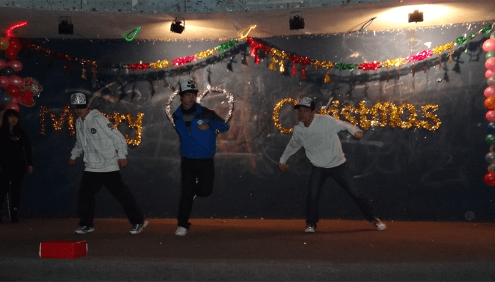
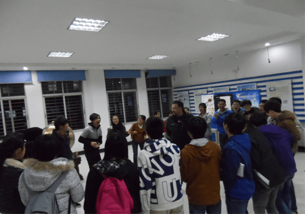
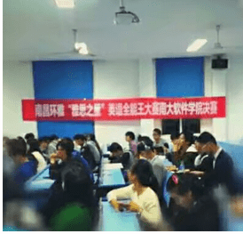

2010年
我们最最最最可爱的EFA英语社 成立啦！！*^O^*
虽然，2010年是我们大EFA创办的第一年，但是，在我们各位前前前...前社长的英勇带领下，我们英语社“打红了2010年的第一炮”(๑•̀ㅂ•́)و✧！
为了丰富大家的大学生活、提升大家的英语写作能力，每年我们英语社都会举办一场创新写作大赛，让参赛的小哥哥小姐姐们根据给的一个简单题目，大开脑洞，随心所欲用英语写一篇大作！而且，在最后会评出一等奖、二等奖等多种奖项，还有小奖品相送呢！你瞧，学长学姐们们写得多认真呀！
这个时候我们的EFA小宝宝才一周岁， 但是学院里的同学老师们还都是很喜欢的呢！
口语风采大赛，往往都是大神圈粉的时候。听着大佬们流利的口语，看着他们精心制作的幻灯片，热血澎湃地传达自己的思想，想不入神都难！！
因为是创办社团的第一年，学长学姐们为了体现英语社的魅力和特色所在，不但举办了多种好玩、精彩的娱乐活动还特地组织了很多专门为同学们提升英语能力的“小项目”，都收获了很不错的效果！
这是一个英语社“开疆扩土”的“时代”，“伟大”的学长学姐筚路蓝缕，为同学们、为社团、为学院，举办了许许多多有意义的活动。譬如，外研社杯英语演讲比赛、女生节、三四级考试培训、亚马逊辩论赛等等，创造了极其辉煌的历史！
当然啦，我们当然还要感谢我们可爱的外教老师，这 位帅气的老师为我们的英语学习以及多种多样的娱乐和学 习活动贡献了很大的力气呢！Teacher, thank you!（比心，比心~）
这几张图里表现的分别是（从外到内）新生的全体大会、中秋节晚会、社团文化艺术节、英语角、包饺子。光是中秋晚会上的三个小姐姐，就很吸引人呢o>_
2012年，虽然距离今天已经很遥远了，但是有很多的活动都延续到了现在，还有许许多多的活动，即使没有延续，也成为了EFA社团史上的一段美好的记忆在这个大家庭里封存，在我们一届又一届之间流传。感谢EFA！
下面这张图片是2012年学长学姐举办的圣诞节晚会。从图片我们可以看到，学长学姐们精心准备的晚会现场，还有各种精彩的节目。 你瞧，图片上的三个小哥，每个人都戴着一个白色的帽子，跳起舞来，很酷哈~
南昌的冬天还是蛮冷的，特别是学校那时候还没有空调。但是，当大家聚在一起说一说、笑一笑、闹一闹，就都不觉得冷了。毕竟有暖暖的灯光、活跃的音乐还有一个个灿烂的笑脸作伴，什么乌云和寒冷都会退散。我相信，那个时候，谁都会明白EFA存在的意义——our family!

英语角，是英语社举办得最受大家喜爱的活动之一，也是为期较长的活动之一。英语角活动的时间比较灵活，会尽最大可能让大家都能够参加。而且，活动的内容丰富多样，还经常会邀请外教老师参加我们的游戏。这可是个提升英语口语表达能力、和外教亲密交流不可多得的机会！
你瞧，那一年，我们的Brain和同学们多么开心！虽然是在冬天，但是大家的笑声不断，早已暖透了屋内的寒意！

这也是那一年我们的英语角活动呢！你们瞧，学长学姐们和外教老师在一起，笑得多开心！
这一年，是Brian陪伴我们的倒数第二年，但是我们永远也无法忘记，曾经有一个高高胖胖、和蔼又可爱的外教老师和我们度过了一段又一段美好而又快乐的日子！Brain愿你在世界的另一边，天天开心\^O^/
英语社是个充满活力的地方，是我们释放青春的地方。在这里，我们不但可以通过晨读、英语角以及各种诸如口语风采大赛、创新写作大赛的活动等等，和其他的同学进行学习交流，提升自己的英语在各个方面的水平能力。
这一年里我们还有趣味运动会、梅岭主峰一日游还有部门各自举办的聚餐、露营活动来放松心情、开阔视野、让每个同学在学习之余收获了一个丰富的大学生活！
晨读，是英语社每年招新结束后的第一个传统活动。其目的，就在于帮助同学们从几个月的暑假中找回学校的状态。我们的口号就是“21天养成一个好习惯”。当然，新人的相识相知，也是这时候很重要的一项“任务”啦~
不过，萌新们不要害怕啦。组织以及带领大家学习的学长学姐还是很和蔼的呢！只要很认真的听学长学姐的话，还好有小礼物相赠哦~
在2016年，一年一度的口语风采大赛和创新写作大赛肯定是如约没少滴！除此之外呢，我们的爸爸们还去了一趟风凰沟，演绎了一段“菜肴”的故事！！
炎热的夏天过后，便是每一年当中，最令人激动兴奋的日子，那就是我们的小鲜肉在我们南大软院闪亮登场！（好吧，现在是腊肉了哈~）趁着这一批宝宝还足够“新鲜”，我们先来了一个月的晨读，“雕琢璞玉”，再通过万圣节晚会、圣诞晚会，“让小金子发出夺目的光彩”！
这是2016年的十一月中旬，咱英语社举办的第一届“全能王”雅思大赛。决赛的那晚，选手们各个西装革履、玉树临风，实在是让人难以忘怀！
记得2016年10月的清晨，每天早上，操场上都会有一群人，热情的奔跑，也总会有那么几个人带动着一群人用心的朗读英语。在清晨淡雅的阳光下，朗朗的读书声在校园里回荡。晨练的阿姨、大叔，各个投来赞许的目光。那是我们的新成员还没有完全脸上的稚气，也正因如此，他们身上才涌动着一股热血。
惊！万圣节的夜晚，文创部突现幽灵，包围祈祷小哥阿姐和神父！
这是4月22号我们EFA大家族去梅岭狮子峰春游，在山顶上拍的照片。虽然大家那天登山都很累，不过话说那里的景色还真的是不错呢，有大河、有农田还有铁索桥。通向山顶的两条小路更是曲折、陡峭，走起来很有意思，是个健身的好地方^O^
5月中旬，我们举办了一年一度的口语风采大赛，今年已经是第十三届了呢。比赛时每一位选手的表现都很出色，讲真是全粉的好机会哟！

2017年，我们先是举办了第四届创新写作大赛，在此同时，英语社内部每周还会由各个部门轮流举办英语角活动，让大家在一起用英语做游戏。后来，天气暖和了，我们就去春游。时隔一个月，便又是第十三届口语风采大赛。仔细想想，时间过得还真是快啊，不过当然这只是上半年的活动哇，下半年还会有许多惊喜哟！